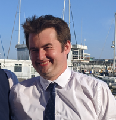

My name is Jake Saunders. You can contact me via email: JSESaunders1 at sheffield dot ac dot uk.
I am a first year maths PhD student at the University of Sheffield. I am a member of the algebraic topology research group. I
am supervised by Markus Szymik.
I am currently learning about highly structured ring spectra, with a particular focus on obtaining a better understanding of the natural $E_\infty$ structure on the unoriented bordism spectrum.
A list of conferences I've attended can be found here.
I was previously an MMath student at Durham University. Here is a page with some stuff I did as an undergraduate.